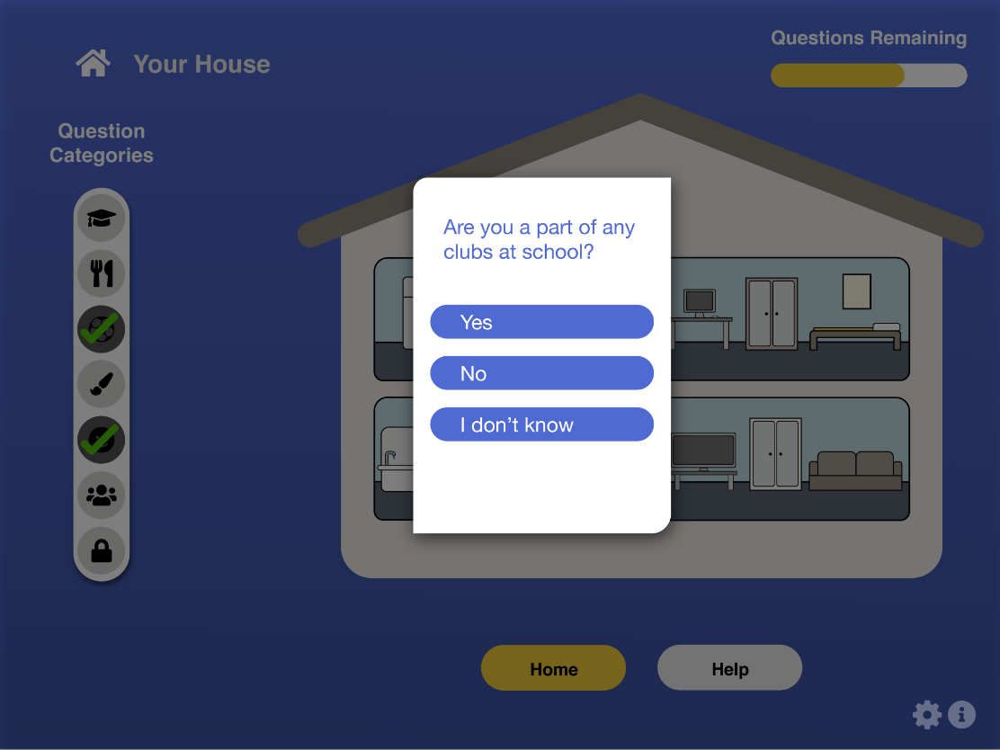

UNICEF: Child and Youth Wellbeing Survey

The UNICEF Wellbeing Survey is a mobile application which gives Canadian children and youth a voice about issues in their homes and communities. This mobile application engages children and youth through the use of games while asking them to answer certain questions. UNICEF and municipalities to which this survey is distributed will be able to collect important data on the state of wellbeing of children and youth in their communities.
Goal
My design team for this project consisted of five other students from our design thinking course. We were partnered with Overlap Associates, a design agency based in Kitchener, Ontario, who tasked us with creating a wellbeing survey targeted to children and youth.
This survey would be used by UNICEF in order to compile information on the wellbeing of children and youth in Canada. My team's main goal was to design the survey content and interface so that it is highly engaging for young individuals between the ages of 6 and 15.
While we were partned with Overlap Associates, we frequently communicated with our course professor who was a guide and lead designer for us, providing us with help and advice along our seven-week design process.
Software Used
Adobe Illustrator
Adobe XD
SurveyMonkey 
My Responsibility
After a group discussion on project roles, I was tasked with:
Conducting secondary research
User testing
Working on the hi-fi prototype in Adobe XD
Being one of three final presenters to Overlap Associates
Research
User Needs
UNICEF and municipalities need an easy and effective way to acquire data from children and youth
Children and youth need to feel heard and be able to express their feelings; to feel engaged
Primary Research
Due to ethical reasons, my team was not permitted to have direct contact with children and youth under the age of 18, so we interviewed parents instead. The purpose of these interviews were to gain a deeper understanding about child and youth electronic habits.
We created a set of questions which each team member used to interview parents they knew outside of their immediate family through platforms like ZOOM, over the phone, or in person.
What age should children be to have access to a phone?
On average, how many hours of screen time does your child have each week?
Who are you comfortable with having access to your child's data from surveys?
Would you be comfortable with your child filling out a survey about their wellbeing?
Would you be comfortable if municipalities used that information to help them and others out?
We obtained eight survey results. From these, we were able to learn that:
❶ Almost all children had access to a mobile phone
❷ Most parents are comfortable with their children filling out a wellbeing survey, as long as it is
anonymous
❸ Most parents were comfortable with municipalities collecting data on their child's wellbeing in order to help others
My team and I also spoke to a
grade one teacher who informed us that younger children have a short attention span and youth get easily bored, therefore the survey needs to be simplified but also fun and engaging so that the completion rate is high and UNICEF obtains the data they need.
Secondary Research
Because we did not have direct access to children and youth, we felt we needed to do a more research. Secondary research conducted consisted of looking at existing children and youth surveys and researching which platform would be best to create this survey on.
Some other things we discovered while looking at online resources and peer reviewed journals are:
To keep questions shorts
Gamification is highly effective within surveys
Include incentives
Have a template for the survey so that different municipalities can change it as needed
Have the ability to skip questions if they feel intrusive
Gamification was a major part of our research as we realized we wanted to go in this direction. We decided that children and youth would be more inclined to particiate and complete the survey if it was in the form of a simple game. Here are some facts about gamification:
Gamified surveys lead to a higher response and completion rate
Gamified surveys lead to a higher self-resported satisfaction rate
Subsequent responses are likely, meaning that participants are more likely to paricipate in future surveys and activities
Humans are naturally competitive, having a desire to play games and feel engaged
Brainstorming
We used an affinity map to help categorize all of our collective ideas. While doing this, we were on a live Discord chat discussing our ideas.

Next, we completed a value proposition canvas to help us see how our concept of a gamified survey would be beneficial for both our client and the user. This also helped us to better see any possible pain points and solutions for them.

We also completed a journey map to help our team see what a survey participant's journey may look like and any issues that may arise. Within this journey map, we also created personas which you can see on the left. Parker represents the children participants and Twilia represents the youth participants.

Prototypes
Once our proposed solution of creating a gamified survey app was approved by both Ryan from Overlap Associates and by our professor, we moved on to the prototyping phase.
Low-Fidelity Prototypes
Possible game design and characters

Medium-Fidelity Prototypes
Possible house design within game


App log-in page options
App icon options


Survey Questions
Our survey questions were inspired by UNICEF's values which you can view below as well as UNICEF's Report Card 16.


We created a list of sample questions which UNICEF could choose from. The questions were shaped around each of UNICEF's values. Below are one sample question for each of these values:
We are learning - Do you enjoy learning new things? (1. Yes, 2. No, 3. I don't know)
We are healthy - What does your dinner often look like at home? (1. pizza box, 2. home cooked meal, 3. I don't know)
We are free to play - Do you feel you have time to yourself to participate in your hobbies? (1. Yes, 2. No, 3. I don't know)
We are participating - Are you a part of any clubs or activities at school? (1. Yes - text box appears, 2. No, 3. I don't know)
We are protected - Have you ever been bullied at home? (1. Yes, 2. No, 3. I don't know)
We are happy and respected - Do you feel that when you speak at home you are heard and understood? (1. Yes, 2. No, 3. I don't know)
We are connected to our environment - How much time do you spend outside in a week? (1. Not a lot, 2. A few hours, 3. A lot, 4. I don't know)
We are secure - Choose an emoji that best describes how you feel about your life at home
We belong - What do you do during your free time at school? (Text box)
While you see simple questions above, the survey will feature pop-ups, scenarios, and cool features depending on the answer (for example, if the child answers "yes" to having a dog, a dog joing the character in the virtual home).
We predict these questions would reveal answers that will allow UNICEF and municipalities to better visualize how the overall wellbeing is of children and youth in certain communities, and whether something needs to be done to help them thrive better in certain aspects of life. For example, if many children in a certain municipality reveal that they do not eat enough meals a day, the municipality could put in place a program to help feed children.
You can view more sample questions
here.
High-Fidelity Prototypes
Log in page

Sign up pages


The design and other elements


